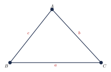
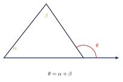
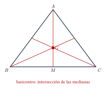
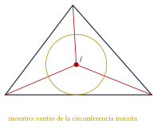
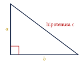

Capítulo 20
Triángulos
IPN CENEVAL
El triángulo es un polígono de tres lados. Sus propiedades permiten resolver problemas de ángulos, longitudes, áreas, congruencia y proporcionalidad.
En este capítulo aprenderás a:
- clasificar triángulos;
- calcular ángulos interiores y exteriores;
- aplicar la desigualdad triangular;
- utilizar el teorema de Pitágoras;
- reconocer las rectas y los puntos notables;
- distinguir congruencia y semejanza.
20.1 Definición y notación#
Un triángulo es un polígono formado por tres segmentos que unen tres puntos no colineales.
El triángulo con vértices \(A\), \(B\) y \(C\) se denota:
Sus lados son:
Por convención, cada lado puede representarse con la letra minúscula del vértice opuesto:
Así:
- \(a\) es el lado opuesto a \(A\);
- \(b\) es el lado opuesto a \(B\);
- \(c\) es el lado opuesto a \(C\).

20.2 Clasificación de los triángulos#
20.2.1 Clasificación por sus lados#
Según sus lados, un triángulo puede ser:
- equilátero: tiene tres lados iguales;
- isósceles: tiene dos lados iguales;
- escaleno: tiene tres lados diferentes.
| Tipo | Característica |
|---|---|
| Equilátero | Tres lados iguales |
| Isósceles | Dos lados iguales |
| Escaleno | Tres lados diferentes |
En un triángulo isósceles, los ángulos opuestos a los lados iguales también son iguales.
En un triángulo equilátero, cada ángulo interior mide:
20.2.2 Clasificación por sus ángulos#
Según sus ángulos, un triángulo puede ser:
- acutángulo: sus tres ángulos son menores que \(90^\circ\);
- rectángulo: tiene un ángulo de \(90^\circ\);
- obtusángulo: tiene un ángulo mayor que \(90^\circ\).
| Tipo | Característica |
|---|---|
| Acutángulo | Tres ángulos agudos |
| Rectángulo | Un ángulo recto |
| Obtusángulo | Un ángulo obtuso |
Un triángulo no puede tener dos ángulos rectos ni dos ángulos obtusos, pues sus ángulos interiores suman \(180^\circ\).
20.3 Propiedades angulares#
La suma de los ángulos interiores de cualquier triángulo es:
Dos ángulos de un triángulo miden:
Calcula el tercer ángulo.
Ver solución
Sea \(x\) el tercer ángulo:
Entonces:
Por tanto:
En un triángulo isósceles, el ángulo comprendido entre los lados iguales mide:
Calcula los ángulos de la base.
Ver solución
Los ángulos de la base son iguales. Sea \(x\) su medida:
Por tanto:
20.4 Ángulo exterior#
Un ángulo exterior se forma al prolongar uno de los lados de un triángulo.
Un ángulo exterior es igual a la suma de los dos ángulos interiores no adyacentes:

Los ángulos interiores no adyacentes a un ángulo exterior miden:
Calcula el ángulo exterior.
Ver solución
Por tanto:
20.5 Desigualdad triangular#
En todo triángulo, la longitud de cada lado es menor que la suma de los otros dos lados:
Si se conocen dos lados \(a\) y \(b\), el tercer lado \(c\) debe cumplir:
Las desigualdades deben ser estrictas.
Si la suma de dos lados es igual al tercero, no se forma un triángulo.
Determina si las longitudes:
pueden formar un triángulo.
Ver solución
La suma de los dos lados menores es:
Como:
las longitudes sí pueden formar un triángulo.
20.6 Rectas y segmentos notables#
En un triángulo se distinguen cuatro segmentos notables:
- mediana;
- altura;
- bisectriz;
- mediatriz.
Las tres rectas de cada tipo se cortan en un punto notable.
| Elemento | Definición | Punto de intersección |
|---|---|---|
| Medianas | Vértice al punto medio del lado opuesto | Baricentro |
| Alturas | Perpendicular desde un vértice | Ortocentro |
| Bisectrices | Divide un ángulo en dos partes iguales | Incentro |
| Mediatrices | Perpendicular por el punto medio de un lado | Circuncentro |
20.6.1 Mediana y baricentro#
Una mediana es el segmento que une un vértice con el punto medio del lado opuesto.
Las tres medianas se cortan en el baricentro.
El baricentro se representa generalmente mediante:
El baricentro divide cada mediana en razón:
La parte comprendida entre el vértice y el baricentro es el doble de la parte comprendida entre el baricentro y el punto medio.
Si \(M\) es el punto medio de un lado:
Por tanto:
y:

El baricentro siempre se encuentra en el interior del triángulo y corresponde a su centro de equilibrio.
20.6.2 Altura y ortocentro#
Una altura es el segmento perpendicular trazado desde un vértice hasta el lado opuesto o hasta su prolongación.
Las tres alturas se cortan en el ortocentro.
El ortocentro se representa generalmente con:
Su posición depende del tipo de triángulo:
- en un triángulo acutángulo está en el interior;
- en un triángulo rectángulo está en el vértice del ángulo recto;
- en un triángulo obtusángulo está en el exterior.
La altura no siempre queda completamente dentro del triángulo.
En un triángulo obtusángulo es necesario prolongar algunos lados.
20.6.3 Bisectriz e incentro#
Una bisectriz divide un ángulo interior en dos ángulos iguales.
Las tres bisectrices interiores se cortan en el incentro.
El incentro se representa generalmente mediante:
El incentro:
- siempre está en el interior del triángulo;
- se encuentra a la misma distancia de los tres lados;
- es el centro de la circunferencia inscrita.

20.6.4 Mediatriz y circuncentro#
La mediatriz de un lado es la recta perpendicular al lado que pasa por su punto medio.
Las tres mediatrices se cortan en el circuncentro.
El circuncentro se representa generalmente mediante:
El circuncentro:
- se encuentra a la misma distancia de los tres vértices;
- es el centro de la circunferencia circunscrita.
Su posición depende del tipo de triángulo:
- en un triángulo acutángulo está en el interior;
- en un triángulo rectángulo está en el punto medio de la hipotenusa;
- en un triángulo obtusángulo está en el exterior.
La mediana y la mediatriz no son lo mismo.
La mediana parte de un vértice y llega al punto medio del lado opuesto.
La mediatriz es perpendicular a un lado y pasa por su punto medio, pero no necesariamente pasa por un vértice.
20.6.5 Resumen de puntos notables#
| Punto | Se forma con | Propiedad | Posición |
|---|---|---|---|
| Baricentro | Medianas | Centro de equilibrio | Siempre interior |
| Ortocentro | Alturas | Intersección de alturas | Interior, vértice o exterior |
| Incentro | Bisectrices | Equidista de los lados | Siempre interior |
| Circuncentro | Mediatrices | Equidista de los vértices | Interior, lado o exterior |
En un triángulo equilátero, el baricentro, el ortocentro, el incentro y el circuncentro coinciden en un mismo punto.
20.7 Teorema de Pitágoras#
En un triángulo rectángulo:
donde \(c\) es la hipotenusa y \(a\) y \(b\) son los catetos.
La hipotenusa:
- es opuesta al ángulo recto;
- es el lado más largo.

Los catetos miden:
Calcula la hipotenusa.
Ver solución
Como la longitud es positiva:
La hipotenusa mide:
La hipotenusa mide:
y un cateto mide:
Calcula el otro cateto.
Ver solución
Por tanto:
Si \(c\) es el lado mayor y se cumple:
entonces el triángulo es rectángulo.
20.8 Congruencia de triángulos#
Dos triángulos son congruentes si tienen la misma forma y el mismo tamaño.
Se escribe:
El orden de las letras indica las correspondencias:
Los criterios de congruencia son:
- LLL: tres lados correspondientes iguales;
- LAL: dos lados y el ángulo comprendido iguales;
- ALA: dos ángulos y el lado comprendido iguales;
- AAL: dos ángulos y un lado correspondiente iguales;
- HC: en triángulos rectángulos, hipotenusa y un cateto iguales.
El criterio LLA no garantiza, en general, la congruencia.
Dos lados y un ángulo no comprendido pueden producir dos triángulos diferentes.
20.9 Semejanza de triángulos#
Dos triángulos son semejantes si tienen la misma forma, aunque pueden tener diferente tamaño.
Se escribe:
Sus ángulos correspondientes son iguales y sus lados correspondientes son proporcionales.
Los criterios de semejanza son:
- AA: dos ángulos correspondientes iguales;
- LAL: dos pares de lados proporcionales y el ángulo comprendido igual;
- LLL: tres pares de lados proporcionales.
20.9.1 Razón de semejanza#
Si:
la razón de semejanza es:
Si la razón de semejanza es \(k\):
- los lados cambian por un factor \(k\);
- los perímetros cambian por un factor \(k\);
- las áreas cambian por un factor \(k^2\).
Dos triángulos semejantes tienen lados correspondientes de:
Si el perímetro del menor es:
calcula el perímetro del mayor.
Ver solución
La razón del mayor respecto del menor es:
Entonces:
Por tanto:
Si los lados cambian por un factor \(k\), las áreas cambian por:
Si los lados se triplican, el área se multiplica por:
20.10 Aplicación de la semejanza#
Un poste de:
proyecta una sombra de:
En el mismo momento, un edificio proyecta una sombra de:
Calcula la altura del edificio.
Ver solución
Los triángulos formados por las alturas y las sombras son semejantes.
Sea \(h\) la altura del edificio:
Multiplicamos en cruz:
Por tanto:
20.11 Procedimiento rápido#
Problemas de ángulos#
- Identifica los ángulos conocidos.
- Utiliza: \[A+B+C=180^\circ.\]
- Si es isósceles, iguala los ángulos de la base.
- Si aparece un ángulo exterior, suma los interiores no adyacentes.
Rectas notables#
- Vértice al punto medio: \[\text{mediana}.\]
- Perpendicular desde un vértice: \[\text{altura}.\]
- Divide un ángulo en dos: \[\text{bisectriz}.\]
- Perpendicular por el punto medio: \[\text{mediatriz}.\]
Teorema de Pitágoras#
- Identifica la hipotenusa.
- Utiliza: \[c^2=a^2+b^2.\]
- Despeja la longitud desconocida.
- Elige la raíz positiva.
Semejanza#
- Identifica los lados correspondientes.
- Escribe las proporciones en el mismo orden.
- Calcula la razón de semejanza.
- Para áreas, utiliza el cuadrado de la razón.
20.12 Resumen#
Suma de ángulos interiores:
Ángulo exterior:
Desigualdad triangular:
Medianas:
Alturas:
Bisectrices:
Mediatrices:
Teorema de Pitágoras:
Razón de áreas de figuras semejantes:
20.13 Errores frecuentes#
Recuerda:
- Los ángulos interiores de un triángulo suman: \[180^\circ.\]
- Los lados iguales están frente a ángulos iguales.
- En la desigualdad triangular no se permite la igualdad.
- La mediana y la mediatriz no son lo mismo.
- La altura debe ser perpendicular al lado opuesto o a su prolongación.
- El incentro se relaciona con los lados.
- El circuncentro se relaciona con los vértices.
- El baricentro divide cada mediana en razón: \[2:1.\]
- En Pitágoras, \(c\) debe ser la hipotenusa.
- Congruencia significa misma forma y mismo tamaño.
- Semejanza significa misma forma, pero no necesariamente el mismo tamaño.
- Las áreas de figuras semejantes cambian con el cuadrado de la razón.
20.14 Ejercicios propuestos#
En un triángulo, dos ángulos miden:
Calcula el tercer ángulo.
Ver solución
La suma de los ángulos interiores es \(180^\circ\). El tercer ángulo es: \[180^\circ - 52^\circ - 73^\circ = 55^\circ.\]
En un triángulo isósceles, cada ángulo de la base mide:
Calcula el ángulo comprendido entre los lados iguales.
Ver solución
Los ángulos de la base son iguales. El ángulo comprendido es: \[180^\circ - (65^\circ + 65^\circ) = 180^\circ - 130^\circ = 50^\circ.\]
Clasifica según sus lados el triángulo con longitudes:
Ver solución
Tiene dos lados de igual longitud (\(5\text{ cm}\)), por lo que es un triángulo isósceles.
Clasifica según sus ángulos el triángulo cuyos ángulos son:
Ver solución
Todos sus ángulos son menores a \(90^\circ\), por lo que es un triángulo acutángulo.
Determina si las longitudes:
pueden formar un triángulo.
Ver solución
No. Por la desigualdad triangular, la suma de los dos lados menores debe ser mayor que el tercero: \(3+4=7\), lo cual no es mayor que \(8\).
Una mediana mide:
Calcula las dos partes en que la divide el baricentro.
Ver solución
El baricentro divide a la mediana en una proporción \(2:1\). Las partes son \(\frac{2}{3}(18) = 12\text{ cm}\) y \(\frac{1}{3}(18) = 6\text{ cm}\).
Relaciona cada conjunto de rectas con su punto notable:
- medianas;
- alturas;
- bisectrices;
- mediatrices.
Utiliza los nombres:
Ver solución
- medianas \(\to\) baricentro;
- alturas \(\to\) ortocentro;
- bisectrices \(\to\) incentro;
- mediatrices \(\to\) circuncentro.
¿En qué punto se encuentra el ortocentro de un triángulo rectángulo?
Ver solución
En el vértice correspondiente al ángulo recto.
¿En qué parte se encuentra el circuncentro de un triángulo obtusángulo?
Ver solución
En el exterior del triángulo.
En un triángulo rectángulo, los catetos miden:
Calcula la hipotenusa.
Ver solución
Por el teorema de Pitágoras: \[c = \sqrt{5^2 + 12^2} = \sqrt{25 + 144} = \sqrt{169} = 13\text{ cm}.\]
La hipotenusa mide:
y uno de los catetos mide:
Calcula el otro cateto.
Ver solución
Por el teorema de Pitágoras: \[a = \sqrt{17^2 - 8^2} = \sqrt{289 - 64} = \sqrt{225} = 15\text{ cm}.\]
Calcula la diagonal de un cuadrado cuyo lado mide:
Ver solución
La diagonal divide al cuadrado en dos triángulos rectángulos. \[d = \sqrt{5^2 + 5^2} = \sqrt{25+25} = \sqrt{50} = 5\sqrt{2}\text{ cm}.\]
Dos triángulos semejantes tienen lados correspondientes de:
Si el área del triángulo menor es:
calcula el área del mayor.
Ver solución
La razón de semejanza de los lados es \(\frac{9}{3} = 3\). Las áreas son proporcionales al cuadrado de la razón de semejanza: \(3^2 = 9\). El área del triángulo mayor es \(10 \times 9 = 90\text{ cm}^2\).
Un árbol de:
proyecta una sombra de:
Al mismo tiempo, una torre proyecta una sombra de:
Calcula la altura de la torre.
Ver solución
Los triángulos formados por la altura y la sombra son semejantes. \[\frac{h_{\text{torre}}}{4} = \frac{24}{6} \implies \frac{h_{\text{torre}}}{4} = 4 \implies h_{\text{torre}} = 16\text{ m}.\]